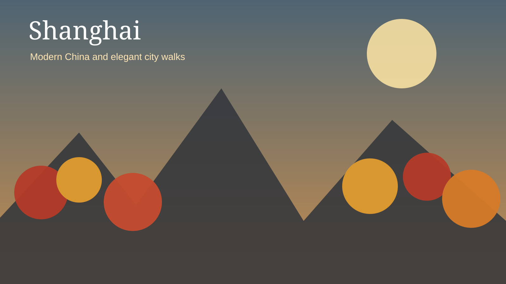
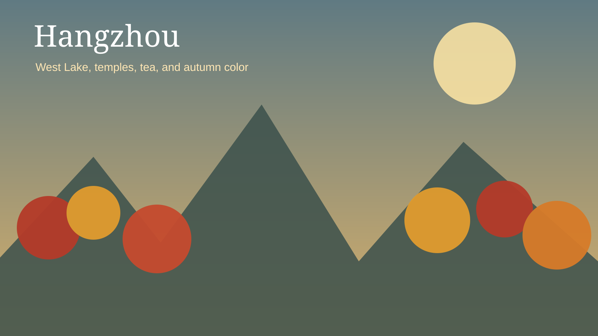
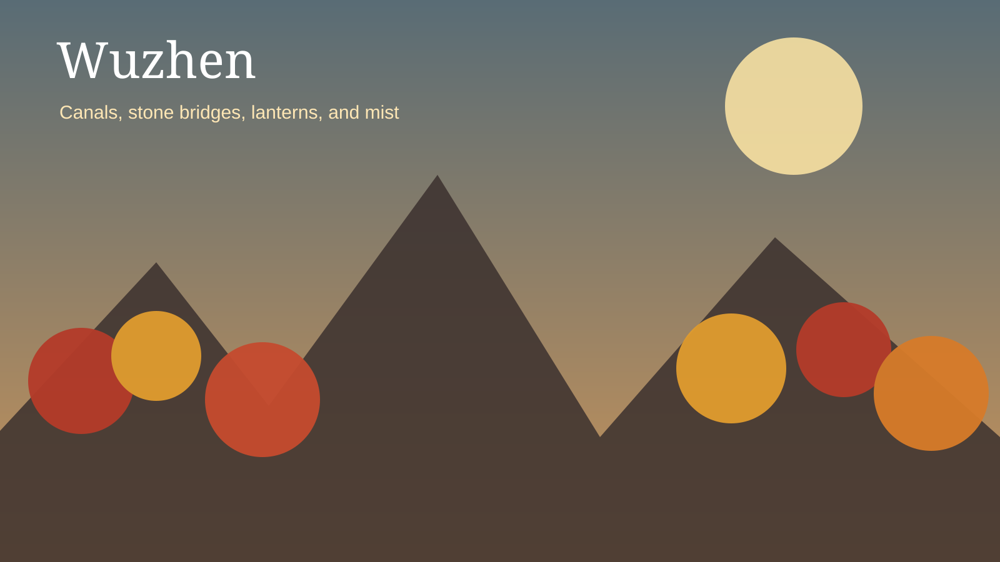
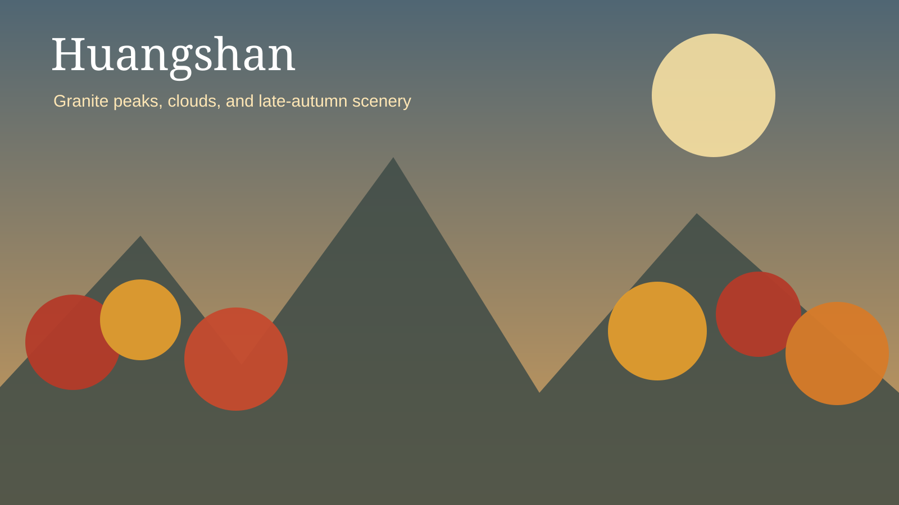
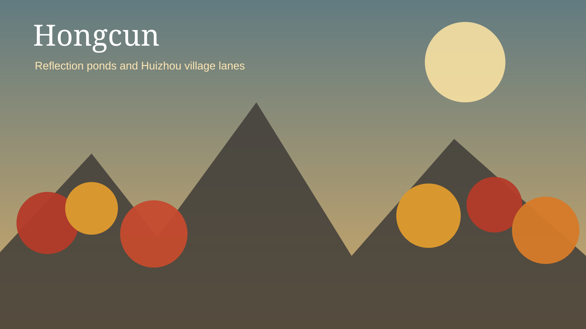

Seasonal Story
Autumn is the core theme, especially around West Lake, Huangshan, and Hongcun.
Shanghai · Hangzhou · Wuzhen · Huangshan · Hongcun
Autumn is the core theme, especially around West Lake, Huangshan, and Hongcun.
The route stays within Eastern China and uses rail and private transfers efficiently.
Hotel changes are limited to those that materially improve the experience.

The Bund, Yu Garden, French Concession, elegant hotels, and Shanghai cuisine.

West Lake, Lingyin Temple, Longjing Tea Village, and autumn scenery.

Canals, stone bridges, lantern reflections, and a quiet morning.

Granite peaks, cable cars, sunset, sunrise, and cool-weather scenery.

Reflection ponds, ancient lanes, white walls, black roofs, and photography.